Most of the information in a Name record can be changed at any time. However you can only change the code when you are the only user —see Changing “code” fields. This is because a changed name Code will be automatically reflected in every transaction that uses that code.
You can only delete a Name provided it has a zero balance and there are no transactions for it. If you try to delete a Name that does not meet these criteria, you will be asked to merge it with one of the same type (debtor, creditor etc.).
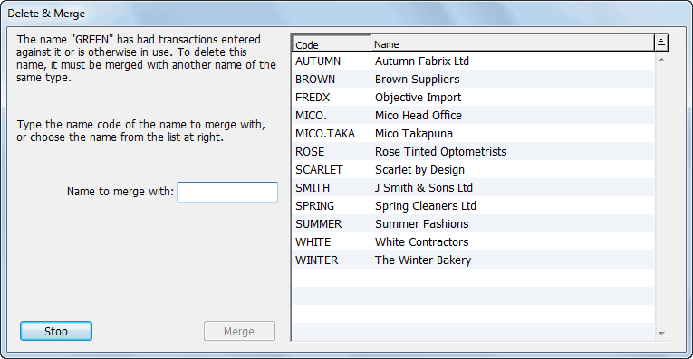
Type the code into which the name will be merged, or select it by clicking on it in the list. All the transactions associated with the original name will now be made out to the one with which it was merged.
Tip: Codes whose first character is a tilde (“~”) will not appear in the Choices list. Set up a code such as “~OLD”, and merge your old names into this.
You can set up your debtors so that invoices and/or packing slips can be sent to a particular branch, but the payment can be made by a head office. Similarly for Creditors, you can purchase from individual branches and make payment to the head office. This is not available in MoneyWorks Cashbook.
Head office billing is implemented by means of a coding convention for the names involved. The rules are as follows:
The code for a Head Office must end in a period.
E.g. MITRE10. (Note the dot)
Branch codes consist of the head office code and an appropriate suffix.
E.g. MITRE10.AKL, MITRE10.WTN
You can change the codes at any time (which means you can easily assemble existing names into branches and head offices).
Invoicing: Invoices are made out to each branch (e.g. MITRE10.AKL). When printed, the invoice will have the head office address, and the delivery address of the branch3. The head office can itself be treated as a normal debtor for invoicing purposes if required.
Statements: Statements can be printed for either the head office or an individual branch. If a head office is selected, all relevant transactions for its branches (and any for the head office) will be included in the statement.
Receipts: When a head office code is typed into the code field in the Batch Debtor Receipts or a cash receipt, all outstanding invoices for it and any branches will be displayed and can be marked off.
Creditor Invoices: Creditor invoices can be put to a branch, and payment made either to the branch or to the head office through the Batch Creditor Payments command or the cash payment entry screen.
If you pay invoices to several branches of the creditor using the Batch Creditor Payments command, only one cheque will be raised. If you need to pay just one branch creditor, use a Payment and enter the full branch code into the Supplier field.
On the Mac only, you can import the address book direct into MoneyWorks. New entries in the address book will be added, and changed entries will be updated.
The Import Address Book settings will be displayed
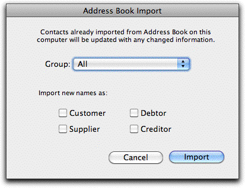
Indicate the type of Name record to create in MoneyWorks
Note that a Creditor is a Supplier who gives you credit, and a Debtor is a Customer to whom you extend credit. Creditors and Debtors are not available in Cashbook.
The information in your address book will be transferred into MoneyWorks, with any previously imported entries being updated. Codes for the new entries will be automatically created based on the first few letters of the name.
2 A constant preceded by a # represents a value in hexadecimal (base 16). That #0F, #10, #11 represent decimal 15, 16 and 17 respectively.↩︎
1 For supported banks only.↩︎
3 Invoice and statement forms should use the Transaction.MailingAddress and Transaction.DeliveryAddress magic fields to take advantage of head office billing.↩︎
Often in business you purchase or sell the same items or services over and over again. The item and product system within MoneyWorks can facilitate this process by allowing you assign descriptions and prices to commonly used items. A further advantage is that you can then track item sales and purchasing trends over time, see what sort of customers purchase what type of products etc.
An item is anything that you buy or sell on a regular basis. It may be something intangible, such as consulting services, or an actual physical product, such as a magazine. In MoneyWorks you can create items and then use them in your normal accounting transactions. You can also use the Enquiry and Analysis features to determine what happened to these items (for example, which customers purchased which products).
Note: This section refers to MoneyWorks Cashbook and MoneyWorks Express only. MoneyWorks Gold has much more extensive product options than are described here, and users should refer to Items, Products and Inventory.
Before you can use the item features of MoneyWorks, you need to define your items. At the least, each item requires a code, and it will probably also have a description and a price. You will also need to indicate which general ledger codes will be used to account for transactions involving the item.
You can also create items “on the fly” as you enter a transaction — see Creating a Record “On the Fly”.
To display the items file1:
The Items list window will be displayed.
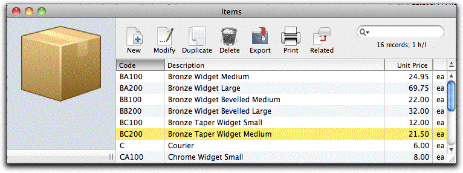
To create a new item:
The Item Entry window will open.
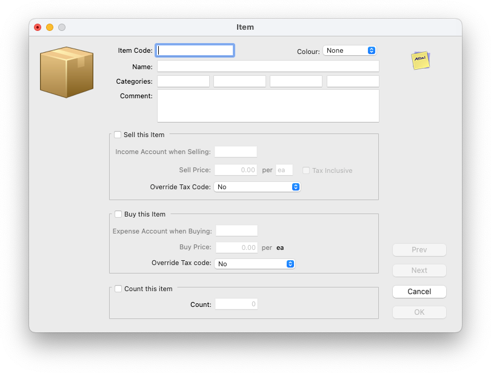
The code is used to uniquely identify the item. It can be up to 31 alphanumeric characters long.
This can be up to 255 characters long, and will be transferred to the description field of the detail line of a transaction whenever the item is used in a transaction.
The categories are used for analysing how the item is used, and you can use them how you wish. For example, in the first field you might enter “TIME” if the item represents a staff member’s time, or “MAT” if it represents material.
Type any comments in the Comment field, and set the Colour if desired
Set the Sell this Item check box
The selling information fields for the item will be enabled.
The Sell this Item checkbox must be set otherwise you will not be able to use the item in receipt (sales) transactions.
In the Income Account when Selling field, specify the general ledger account code that will be credited when the item is sold
You must fill in this field with a valid general ledger code. If you tab through the field, the account choices window will be displayed. You should normally specify an income account here.
The default GST/VAT or Sales Tax used in the sales transaction is based on the tax code that is associated with this selling account.
Enter the selling price into the Sell Price field
This is the default price that will be displayed when the item is used in a cash receipt transaction.
This can be two characters (e.g. “Ea” for each, “Kg” for kilogram)
If the sell price includes GST, set the Tax Inclusive check box
Override Tax code: You can force a different tax code on the sale by setting the tax override to a specific tax code. For example if you are in Australia and this particular item is GST Free, you would set the tax override to "F". Note that this setting is subservient to any tax override associated with the customer.
Set the Buy this Item check box
The fields requiring information for buying the item will enable.
The Buy this Item checkbox must be set otherwise you will not be able to use the item in payment (purchase) transactions.
In the Expense Account when Buying field, specify the general ledger account code that will be debited when the item is purchased
You must fill in this field with a valid general ledger code. If you tab through the field, the account choices window will be displayed. You should normally specify an expense account here.
The default GST/VAT or Sales Tax used in the purchase transaction is based on the tax code that is associated with this purchase account. Note that unlike GST or VAT, Sales Tax (such as PST in Canada) will be automatically included into the cost of the item by MoneyWorks for purchases.
Override Tax code: You can force a different tax code by setting the tax override to a specific tax code. Note that this setting is subservient to any tax override associated with the supplier.
Enter the purchase price into the Buy Price field
This is the default price that will be displayed when the item is used in a cash payment transaction.
The buy unit is defined to be the same as the sell unit. If you want to change this (and you do not buy the item) you need to set the Sell this Item option, change the units, and then reset the Sell option.
Clicking Cancel will discard the entry or any changes made.
When this option is set, a count will be kept of the number of items you purchase, less the number that you sell. In theory this will be the number of items that you actually have. Note that this is a simple count, which you can modify at any time by changing the count value, and that no inventory accounting is done (for that you need the full inventory feature in MoneyWorks Gold, as described in Stock Control.
You can modify a item entry by double-clicking on it in the normal manner.
You can delete a item regardless of whether or not it has been used in transactions. However if a item is deleted, you will not be able to post any existing transactions that use it2. Recurring transactions that use the item will recur correctly, but you will not be able to post them.
You can change the code for an item if you wish. The old item ceases to exist, and the new item inherits all the attributes (except the code) of the old. Existing transactions that use the old item code are not changed, as is the case when changing the code for an account or name.
If you change the price or description for a item, any recurring transactions involving that item will use the new price, description and control accounts when they recur.
To print an item/product list:
At this point, you may like to use the search and sort functions (under the Select menu) to isolate the items that you wish to print.
Tip: The report you print will have the same columns as shown on the screen, so if you customise the list — see Customising Your List you can configure your own report.
The Print dialog box will be displayed.
If you only want to print the highlighted transactions, set the Print Highlighted Records Only check box
Set the Output to pop-up to Printer (or Preview, email etc)
Click the Print (or Preview, Send etc) button
The product list will be printed. If Cancel is clicked, no list is printed.
Use the Item Sales enquiry (in the Reports menu in Cashbook and Express) to see details and patterns of selling (or buying) behaviour for individual items or groups of items. This is discussed in Product Enquiry.
There are also a number of product reports in the list sidebar. These work on the highlighted item(s) in the item list, or all items if you have not highlighted any.
If you are in a service based industry you may be selling time, and need to track direct expenses made in the course of doing jobs. MoneyWorks allows you to tag each line of a transaction with a job code to facilitate tracking of disbursements and costs. In addition, it provides a job list which contains summary details about particular jobs (this is not available in Cashbook).
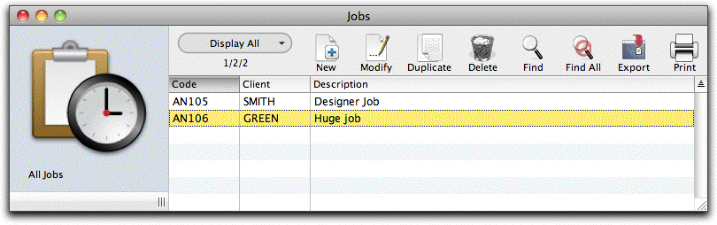
MoneyWorks Express supports limited “job tagging”, whereby individual transaction lines can be associated with specific jobs.
MoneyWorks Gold supports job tagging and a comprehensive job tracking, which includes entry and recording of time data, automatic trapping of disbursements, and the automatic generation of invoices.
Note: This section covers job tagging only—for details of the full job costing system — see Job Control.
To create a new job (not Cashbook):
The Jobs list will be displayed
The Job entry screen will open
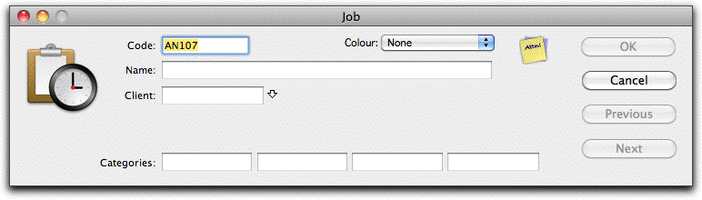
Job code This is the code to identify the job. It can be up to seven alphanumeric characters long. You must specify a unique code for every job.
Name This is intended to provide a brief (255 character) summary of the job.
Client The code of the client for whom the job is being done. You must specify this, and the client must be a debtor (otherwise you will not be able to invoice them).
Colour Colour is for your own use to easily identify jobs (e.g. Red for urgent).
Categories These are used in the same way as Item and Name categories for reporting, analysis and enquiries.
To change information about a job:
The job window will open.
Click OK
Note that if you change the job code, the job will be disassociated from any existing job sheet items and you will not be able to invoice or delete these items.
To delete a job:
Choose Edit>Delete Job or click the Delete toolbar button
You will be asked for confirmation before the job is deleted.
Note: Transactions associated with the job are not affected when the job is deleted.
The reports with the prefix “JT” are used for Job Tagging. These are based on transactions whose detail lines have been tagged to a job.
JT Account Provides a list of the account codes used on the highlighted jobs, with the net amount allocated to each account, separated into Income and Expenses.
JT Resource Shows the income by resource used on the highlighted jobs. Both the quantity and the net is shown.
JT Resource Usage For each of the specified resources, shows the quantity and net that have been invoiced out by job.
1 In MoneyWorks 5 and earlier, this was referred to as the Products file.↩︎
2 If you do inadvertently delete a item, you can re-enter it.↩︎
A debtor is someone who owes you money, normally because you have invoiced them for goods or services supplied. The invoice details what they owe and why. The process of managing debtors is often referred to as Accounts Receivable.
Note: This chapter does not apply to MoneyWorks Cashbook which does not support debtors.
Operating a Debtors ledger involves up to 5 distinct processes:
Enter the Sales Invoices
Post the Invoices to update the balances in the debtors ledger and the general ledger
Print/email Invoices and send them to customers
Process Debtor Receipts when the debtor makes payment. This updates the balances in the debtors ledger and the general ledger
Optionally Print/email/eInvoice and Age Statements These processes are described in this section.
When you provide some goods or services to a customer you normally expect to be paid. Sometimes the customer will pay immediately, in which case you treat the transaction as a Cash Sale — see Entering Receipts. On other occasions you will give the customer an invoice indicating how much is to be paid and he or she will pay at some future date. In this situation you would use the debtors ledger to record the transaction as a Sales Invoice.
Note: In MoneyWorks Gold, if you recorded the sale using a Sales Order and processed it using the Ship command, you do not need to enter the invoice again—the invoice will have been automatically created for you when you shipped the goods — see Shipping Goods.
Each Sales Invoice transaction credits the accounts specified in the transaction and debits the appropriate Accounts Receivable account (as specified in the debtor record)—you don’t need to worry about this, as MoneyWorks does all the accounting for you.
Note that there are several options in the Document Preferences which apply directly to Sales Invoices such as your standard payment terms, an automatic credit hold feature for overdue debtors, and the sequential invoice number — see Sequence Nos.
To create a new sales invoice:
A new transaction window will open.
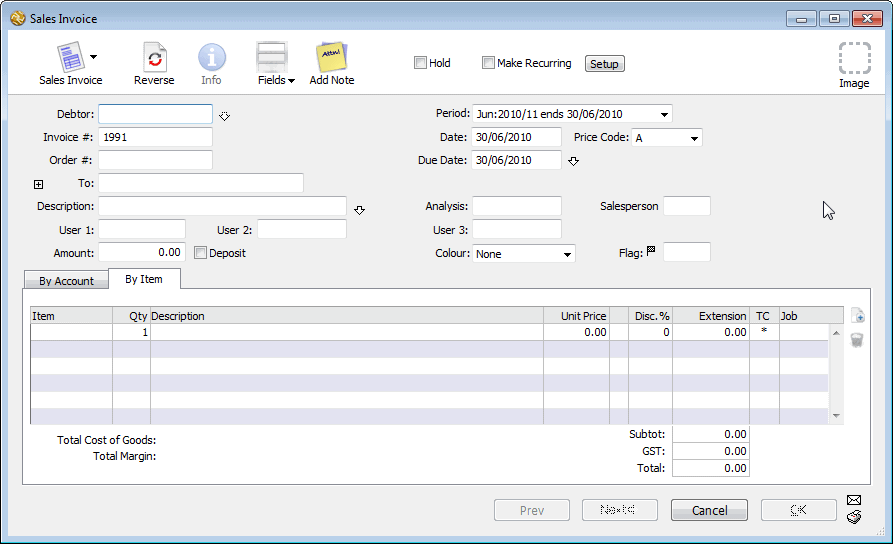
Pressing Alt-Shift-4/Ctrl-Shift-4 is a keyboard shortcut for this.An invoice number will be automatically assigned to the transaction in the Invoice # field. The invoice number sequence is set in the Document Preferences dialog box. When you first start using MoneyWorks, it will be 000001—you may want to reset the sequence in the Preferences — see Sequence Nos.
The details of each debtor are stored as a Name record — see Names, and each is uniquely identified by the code.
If the Debtor already exists: If you have used the debtor code before, the name of the debtor will automatically appear in the To field.
If you are unsure of the code, either key in a part of the code or press the tab key. The choices list will display a complete list of debtors and customers. Double-click on the correct one.
You can "drill down" to see and change the debtor information by clicking on the down arrow next to the debtors field.
If the Debtor is a new one: If the debtor is not already in your system, you will need to create a new debtor record. To do this, enter a code for the new debtor and press tab. As the code will not be found the choices list will be displayed. Click the New button to create the new Names record — see Entering details of a Names record.
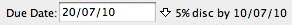
The Discount Terms window will open. Change the settings and click OK to change the terms for this invoice only.
You can store up to 13 characters in this field.
Usually you will not need to alter this.
If the Address is different: If the goods are to be sent to an address that is different from the normal address of the debtor, you can enter a delivery address for this invoice — see Delivery and Mail Addresses.
If the address is hidden, click the Address Disclosure icon
The address fields will display.
If the Customer is a branch: If the customer is a branch, use the branch code. If you have set up the corresponding head office correctly, you will be able to receipt money paid by the head office against the branch invoice.
Note: The invoice will be in the currency associated with the debtor.
By default, this will contain today’s date or the last date used.
If this customer is eligible for a prompt payment discount, details of this will be shown next to the Due Date field. The prompt payment is based on the transaction date, not the payment date.
Use the return key to split the address over more than one line.
Alternatively, you can click the Deliver to... button to show the Names choices window, and select the delivery address from an existing customer or supplier.
field
Mac and Windows disclosure icons
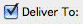
Set the Deliver To check box to type in the delivery address, or click the Deliver to... button to select an existing address.
This description is shown in the transaction list window and helps you identify the transaction. Depending upon how your invoice form is designed, it may also appear on the printed invoice.
This amount will be in the currency of the debtor.
If the Auto-Calculate Transaction Total option is on (which it will be by default) in the Document Preferences, you will not need to fill in the Amount field for sales invoices—it will be calculated for you based on the values in the detail lines of the invoice transaction. This means that your invoices do not have to be pre-calculated before you can enter them.
If this option is off, the OK and Next buttons dim when an amount is entered into the Amount field. The transaction is not complete until the total amount is allocated to one or more accounts.
Deposit check box
The Make Deposit window will be displayed when you accept the transaction. Note that if the deposit box is set, the invoice will be posted when you click OK or Next.
The due date for the invoice is automatically calculated based on the payment terms set in the debtors name record, but can be overridden.
The gross total for the invoice needs to be allocated to one or more accounts before the transaction can be entered. Create a new detail line for each account or product to be credited with part of the total amount.
To find out how to enter detail lines by account code or by product code — see Entering Detail Lines.
Note that if the Auto-Calculate Transaction Total option is off in the Document Preferences, the OK and Next buttons remain dimmed until the transaction Amount and the total of the detail lines balance.
The transaction is saved a new one is displayed. Click the OK button if this is the last transaction to be entered.
In MoneyWorks a credit note to a customer is entered as a negative sales invoice—the window title will change to Debtor’s Credit Note. It will (when posted) appear in the receivables list until it is offset against another invoice from the same debtor — see Contra Invoices.
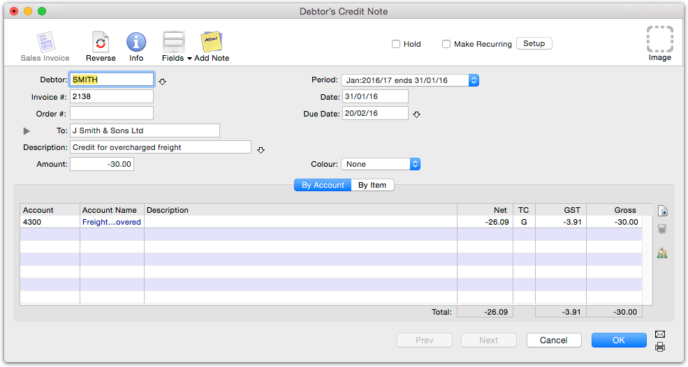
For a credit note involving products, you should enter a negative quantity—if these are stocked items, they will be brought back into stock (at their current stock average value) when the credit note is posted.
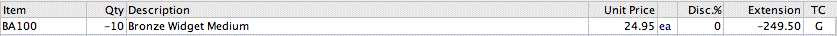
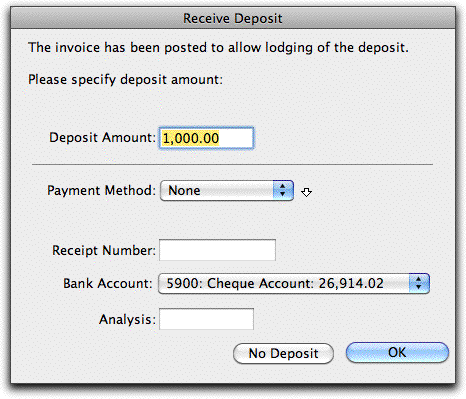
Receiving a DepositSometimes a customer will part pay for the goods when he or she is supplied them. Such a part payment is called a deposit.
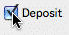
To record a deposit when creating an invoice:
The post option will be automatically set when you set the Deposit option—transactions involving a deposit must be posted.
The Enter Deposit window will be displayed.
To record a deposit when raising an invoice, set the Deposit option.
Enter the Deposit Amount
This must be no greater than the invoice total.
If necessary enter the Payment Method
Cash receipts (i.e. the folding stuff) are amalgamated into a single total on deposit slips printed using the Banking command.
Set the Bank Account and other details if necessary
Click OK
A partial payment for the amount indicated will be automatically created and posted.
If No Deposit is clicked, the partial payment is not created (although the original invoice will still have been posted).
The default prompt payment terms for an invoice are taken from the Prompt Payment details on the customer/supplier Name record. To override these for a particular invoice:
The Discount Terms window will open
Note: The tax handling of prompt payment discounts is determined by the PPD Preferences, and varies from country to country.
MoneyWorks has several ways to help you manage debtors who may be overdue in paying accounts or over their credit limit.
When an invoice is put on hold—that is, the Hold check box
on the invoice is checked—MoneyWorks will not allow the
invoice to be posted.
Setting the Hold
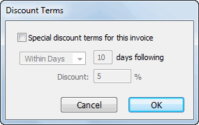
If you also want subsequent invoices for the debtor to automatically be put on hold, set the Hold option in the Name record. If the Auto Credit Hold check box in the Preferencescheck box means the invoice cannot be posted.
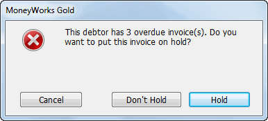
dialog box has been turned on, you will be alerted as you enter a transaction for a debtor that has an invoice outstanding beyond the number of days you specify or is over the credit limit specified in the Debtor record. (A zero limit is assumed to be unlimited.)
Turn on the Special discount for this invoice option
Set the prompt payment term and discount percent
Click OK
The special terms will be recorded for this invoice only.
You can reinstate the default terms by re-opening the Discount Terms window and turning off the Special discount terms option.
Note that the Prompt Payment details can be overridden only for users for whom the Override Pricing and Terms privilege has been set.
Clicking Hold in either of these instances will set the Hold check box for the invoice. This can also be set manually.
Invoices on hold cannot be posted.
There are two ways to print/email sales invoices:
By setting the Print option on while the transaction is open on the screen. When the transaction is accepted, the print process will commence;
By highlighting the invoice(s) in the Transactions list and choosing Print Sales Invoice from the Command menu (or press Ctrl-[/⌘-[), or clicking the Print Invoice toolbar button.
Note: Users who have the MoneyWorks Privilege option Print Unposted Invoice
turned off will not be able to print an invoice unless it has been posted.
Note: Transactions that have been printed (or emailed) have a printer icon in the P (for Printed) column of the Transactions list. Click on the field heading to sort the invoices—the unprinted invoices will be at the top of the list if it is sorted in descending order.
Another way to send invoices is to eInvoice using the PEPPOL standard (not available in all countries). E-invoicing means that the invoice you send will automatically appear in your customer's accounting system (even if they are not enlightened enough to be using MoneyWorks), provided that the customer is also using e-invoicing. See E-Invoicing.
When printing/emailing an invoice, the Print Sales Invoices window will open.
Choose the form to be used for formatting the invoice from the Use Form
pop-up menu
Enter any text in the optional Message edit box
This message will be printed on all the invoices being printed. You can type up to 80 characters into this edit box.
Check the Print “Copy” if Already Printed option if you are reprinting an invoice
If this option is checked and the invoice has already been printed, the words “Copy of” appear next to Tax Invoice1. This is useful if the debtor requests another copy of the invoice.
If the invoice has not already been printed this is ignored.
Note: If this is the first time that you have printed an invoice, you should click the Layout button to check the positioning and paper size.
The standard Print dialog box will be displayed, allowing you to set the number of copies.
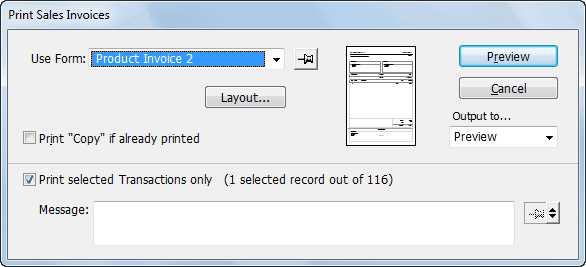
If you are using a Plain invoice, and if the Print this Logo and/or Print Address & Phone Nos options in the Company Setup window have been checked, the company logo and/or address details will be printed at the top of the invoice. You may want to print the invoice on letterhead which contains these details. In this case, you should ensure that the options are off and that the top margin in the page setup is large enough that your letterhead is not overprinted.For further information on printing see Printing Invoices, Receipts and other Transaction Forms
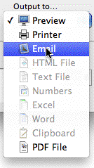
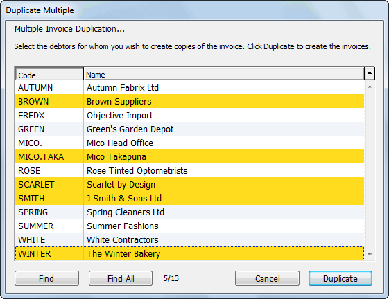
Choose your invoice from the Use Form pop-up, select the email output option and click SendThe Mail Attachment window will be displayed.
Proceed as described in Emailing Forms
The Duplicate Multiple command is used to generate multiple copies of a sales invoice. This is useful where you have a standard invoice that needs to be sent to a large number of debtors. A school sending invoices to all its pupils for school fees, or a business invoicing subscribers to a service are examples of this.
You can only use the Duplicate Multiple command in this tab view.
This invoice transaction should contain all the details that need to be duplicated for a number of other debtors.
The Duplicate Multiple window is displayed. All the debtors in your file (excluding templates) will appear in the list.
Use the Shift or Control/Command keys to select a number of debtors. The number of invoices that will be created is displayed at the bottom left of the list (the other number is a count of the Names record showing in the list).
If you have a large number of debtors on file, click the Find button to search the debtors that match some defined criterion.
Click the Duplicate button
An unposted copy of the highlighted invoice will be generated for each of the highlighted debtors. The date and period for the new invoices will be the same as that of the original.
Click the Cancel button to cancel this process.
The new invoices are unposted and can be modified or deleted as necessary.